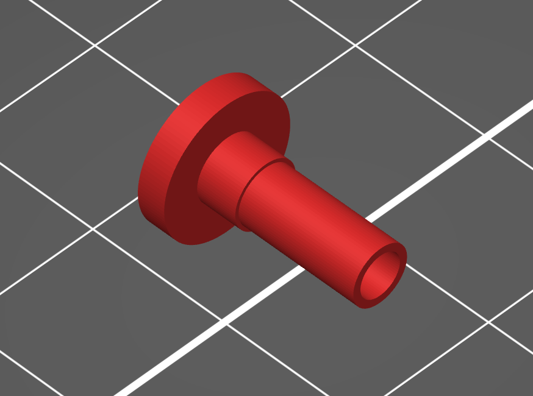

Week 5: 3D Design & Printing
This week, we worked on 3D design. We tried out some scanners in class, and actually found that an iPhone scanner (which wasn't technically a scanner since it used the iPhone X's depth perception) had a much better result than the hand scanners, which would often induce weird results when the same part was scanned twice, but incomplete when it was only scanned once.
My goal was to make a motor coupler, since last week I hadn't been able to find a good long term solution to couple my motor and my gear. I had tried a bit of tubing, but it wasn't entirely sucessful, since the tube wasn't the right size for both the gear and the motor shaft.
I measured all of the pieces and then designed the piece on Fusion360 by creating circles and extruding them, then changing the settings of shape overlaps and moving the pieces in the z-axis. I would have made it directly with cylinders, but for some reason it wouldn't work when I tried to do edit in 3D.
The 3D piece looks a little different from the actual piece, since I confused the radius/diameter. This is when the Prusa editing functions were really useful, since I could just scale my X and Y by 200% and everything was easily fixed. I debated putting the piece on its side, so that the direction in which it was weak was not the same direction that I was applying pressure on, but decided not to since the piece would print really easily in the orientation I had it in (not the one pictured), without needing any supports.

The piece fit perfectly with my gear and motor (I intentionally measured on the small side, since plastic has a little flex, and I assumed that since I wanted a tight fit, I would need to account for that flex in my measurements).
Download gear coupler gcode and stl files